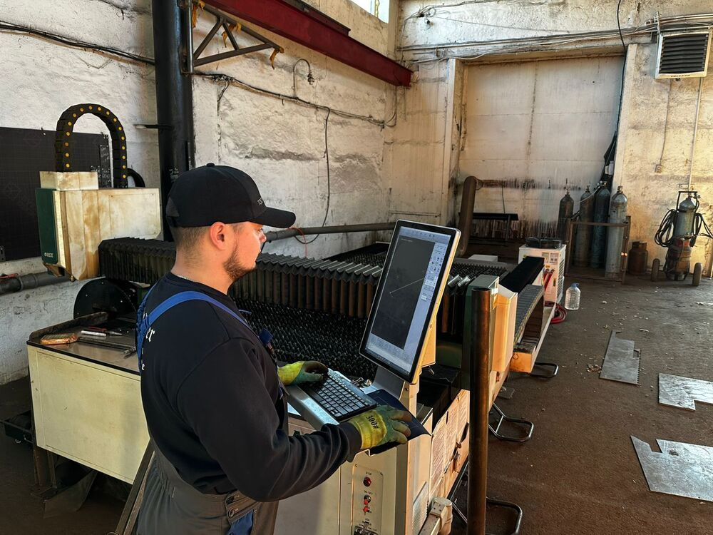
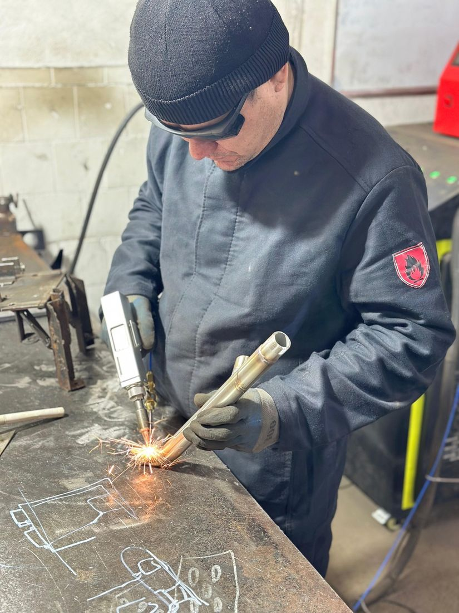
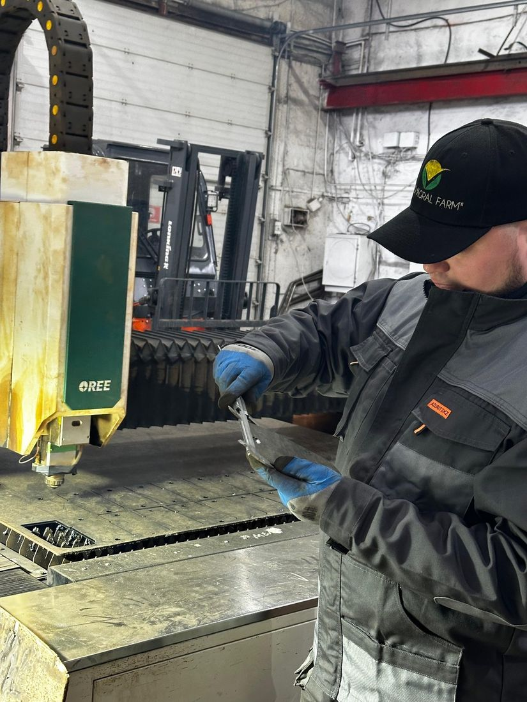

Lokaler Hersteller von Ausrüstung für Milchviehbetriebe
TOO „EFIM FARM TECHNOLOGIES“ — seit 2017 in der Herstellung und Lieferung von Stalltechnik in der Republik Kasachstan tätig.
TOO „EFIM FARM TECHNOLOGIES“ ist seit 2017 in der Herstellung und Lieferung von Ausrüstung für die Tierhaltung in der Republik Kasachstan tätig. Das Unternehmen ist auf die Komplettausstattung von Milchviehbetrieben spezialisiert und realisiert Projekte in allen Regionen des Landes.
Die Produktionsstätte befindet sich in Kasachstan und umfasst über 3000 m² Fläche mit moderner Metallbearbeitungstechnik. Im Unternehmen arbeiten 40 Fachkräfte; es verfügt über einen eigenen Service- und Logistikdienst sowie ein System zur Kontrolle der Produktionsprozesse.
Was wir herstellen
Schwerpunkt ist Ausrüstung für die Rinderhaltung. Das Sortiment umfasst über 100 Produkte, darunter Stalleinrichtung, Melkstandgestelle, Futtertischabgrenzungen, beheizte Tränken, Fressgitter, Schieberanlagen, Behandlungsstände, Ausrüstung für die Kälberhaltung und vieles mehr.
Lokalisierung
Im Rahmen der Entwicklung der heimischen Agrarwirtschaft und der Importsubstitution setzt TOO „EFIM FARM TECHNOLOGIES“ 2024–2027 ein Programm zur Lokalisierung der Produktion von FARESIN-, EISELE- und DAIRYMASTER-Ausrüstung um. Der Lokalisierungsgrad liegt heute bei 30 % und umfasst die Fertigung von Stahlkonstruktionen, einzelner Baugruppen sowie die Anpassung der Technik an die Einsatzbedingungen in Kasachstan.
Service
Besonderen Wert legt das Unternehmen auf Servicequalität und technische Betreuung. Kunden erhalten vollständigen Garantie- und Nachgarantieservice, Ersatzteilverfügbarkeit und technischen Support in allen Betriebsphasen.
Ergebnisse
Seit 2017 hat TOO „EFIM FARM TECHNOLOGIES“ über 200 Projekte zur Ausstattung von Milchviehbetrieben umgesetzt. Das Gesamtvolumen der gelieferten Ausrüstung übersteigt 45 Mrd. Tenge. Die Projekte wurden in allen Gebieten Kasachstans erfolgreich realisiert.
Heute ist TOO „EFIM FARM TECHNOLOGIES“ einer der heimischen Hersteller von Stalltechnik, die zur Entwicklung der Agrarwirtschaft Kasachstans, zur Schaffung von Arbeitsplätzen und zur Einführung moderner Technologien in der Landwirtschaft beitragen.
So arbeiten wir







Ausrüstung für Ihren Betrieb gesucht?
Wir finden die passende Lösung für Ihren Bestand und senden Ihnen ein Angebot.